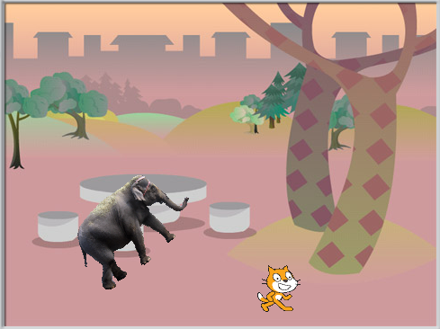
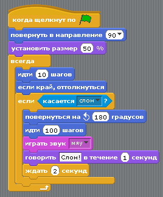
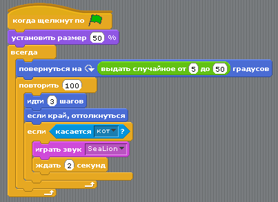

Кот и слон передвигаются по холсту. Когда они сталкиваются, то издают звуки, и кот отпыгивает от слона в противоположную сторону.

Скрипт кота:
"Отпрыгивание" реализовано с помощью двух команд - повернуть на 180 градусов и идти 100 шагов.

Скрипт слона:
Если поворот и ходьба будут находится в одном цикле, то объект будет поворачивать после каждой команды идти ... шагов. Это слишком часто и выглядит как метанье на почти одном месте.

Скрипт сцены:
Почему-то музыка проигрывается только один раз (тестировано в Ubuntu).